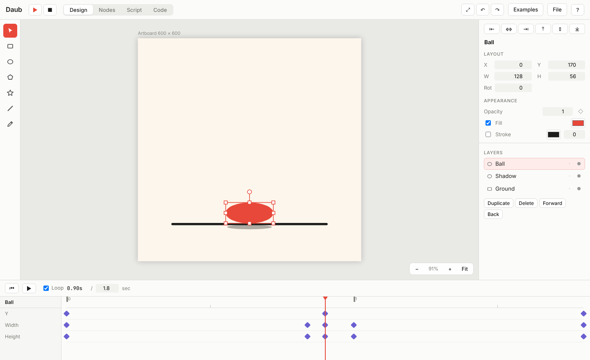

Design
A vector editor with a timeline
Draw with shapes and a bezier pen, arrange layers, then animate any value with keyframes and easing (smooth, overshoot, bounce, hold). Export PNG, SVG or a WebM video.
- Pen, shapes, layers, alignment and snapping
- Keyframes on position, size, rotation, opacity, radius
- Your drawings can be dropped straight into the node graph
